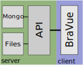

Colin Gross
2022-01-25

module.exports = {
publicPath: '/',
pages: {
home: {
entry: 'src/pages/home/main.js',
template: 'src/pages/home/home.html',
filename: 'index.html',
title: 'Bravo:Home',
chunks: ['chunk-vendors', 'chunk-common', 'home']
variant: {
entry: 'src/pages/variant/main.js',
template: 'src/pages/variant/variant.html',
//filename: 'variant',
title: 'Bravo:Variant',
chunks: ['chunk-vendors', 'chunk-common', 'variant']<script>
import BaseSnvCount from '@/components/histogram/BaseSnvCount.vue'
export default {
name: "RegionSnvCount",
extends: BaseSnvCount,
inject: {
chrom: {default: '11'},
start: {default: 200000},
stop: {default: 201000},
},
computed: {
url() { return `${this.api}/variants/region/snv/${this.chrom}-${this.start}-${this.stop}/histogram` }
}
}
</script><template>
<GeneInfo :geneData="geneData"/>
<ToggleList list-title="Panels" list-group="showPanels"
:list-vars="showPanels"/>
<ToggleList list-title="Columns" list-group="showCols"
:list-vars="showCols"/>
<GeneSummary :filterArray='filterArray' />
<SeqDepth
:hoveredVariant="hoveredVariant" :segmentBounds="segmentBounds"
:segmentRegions="segmentRegions" :givenWidth="childWidth"
:givenMargins="childMargins"/>
<TranscriptBars :geneData="geneData"
:hoveredVariant="hoveredVariant" :segmentBounds="segmentBounds"
:segmentRegions="segmentRegions" :givenWidth="childWidth"
:givenMargins="childMargins" />
<GeneSnvCount
:segmentBounds="segmentBounds"
:segmentRegions="segmentRegions" :givenWidth="childWidth"
:givenMargins="childMargins"
:filters="filterArray" :visibleVariants="visibleVariants"/>
<BpCoordBar :segmentBounds="segmentBounds"
:segmentRegions="segmentRegions"
:givenWidth="childWidth" :givenMargins="childMargins" />
<FilterBar @filterChange='handleFilterChange'/>
<GeneSNVTable :filters="filterArray" :doDownload="doDownload"/>
</template>//describe('SearchBox.vue query parsing.
it('tickets a dbSNP reference query with endpoint: variant', () => {
const rsid_result = wrapper.vm.queryToResultTicket('rs12345678')
expect(rsid_result.endpoint).to.equal('variant')
})
it('tickets a range query with endpoint: region', () => {
const range_result = wrapper.vm.queryToResultTicket('chr11:10,500,100-10,503,000')
expect(range_result.endpoint).to.equal('region')
})
it('defaults to ticket query with endpoint: gene', () => {
const range_result = wrapper.vm.queryToResultTicket('HBBP1')
expect(range_result.endpoint).to.equal('gene')
})describe('QualityFilterButton dropdown', () => {
it('toggles showDropDown when button is clicked', () => {
const wrapper = shallowMount(QualityFilterButton, {})
const initialState = wrapper.vm.showDropDown
wrapper.find('button').trigger('click')
expect(wrapper.vm.showDropDown).to.equal(!initialState)
wrapper.find('button').trigger('click')
expect(wrapper.vm.showDropDown).to.equal(initialState)
})
})